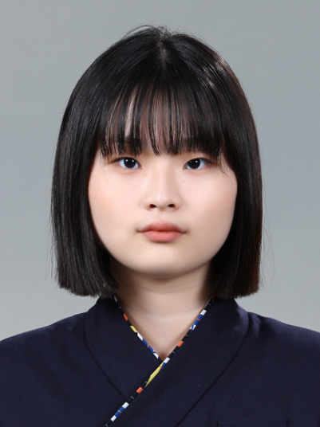

Let me introduce myself.
박윤서
2006년 11월 23일 대구 출생
경일여자고등학교 졸업
대구가톨릭대학교 NMGD 2학년 재학 중
한국어, 영어, 일본어 가능
Yunseo Park
Born in Nov 23th, 2006 Daegu
Graduate Gyeong-il Girls High School
Attending 2nd grade NMGD, DCU
Speak Korean, English, Japanese
朴玧敍
2006年11월23日大邱生まれ
慶一女子高校卒業
大邱カトリック大学NMGD 2年生学中
韓国語, 英語, 日本語が出来る
사용가능 프로그램 리스트

+ unity, html, python 등... 여러 코딩 언어들도 배우고 있습니다.

3D로 오기까지의 경로
간호사인 어머니를 존경해 간호사가 되고자 함
2010년
과학을 좋아하고,, 지구를 살리고 싶다는 마음에 식물학자를 꿈꾸게 됨
2017년
초등학교 때 배운 코딩으로 인해 개발자가 되고자 함
2019년
오타쿠가 되고, 3D에 관심을 가지게 되어 애니메이터를 꿈꾸게 됨
2023년
그리고 지금. 뉴미디어과에 도착!
2025년~